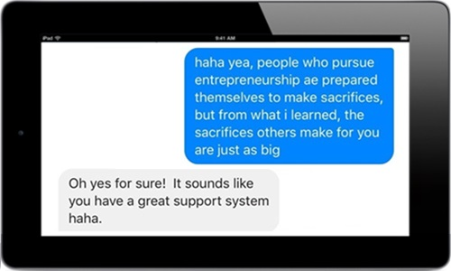

Posted on Mar 5 at 2:38 AM
People who pursue entrepreneurship are prepared themselves to make sacrifices, but from what I learned, the sacrifices others make for you are just as big.
Very rarely have I ever said anything worth quoting, but the quote above comes from a candid conversation I had today with a friend about my recent career change. Most conversations I’ve had recently touch on the topic of living without a steady paycheck, pulling myself out of my comfort zone, or some other form of sacrifice to “pursue my dream” or “make a difference”. Today, after what I said, I reflected on the level of sacrifice from everyone that has gone into my adventure this year.
Thank you to those in my life that sacrifice themselves, their time — and even their wellbeing — for me. Thanks so much for giving without asking, for becoming flexible out of necessity, and for having patience knowing this could be several months long, or even years.
Everyone is on an adventure, and no matter what adventure that is, people in your life have made sacrifices for you — your parents, family, friends, mentors, teachers — appreciate them today!